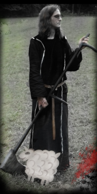
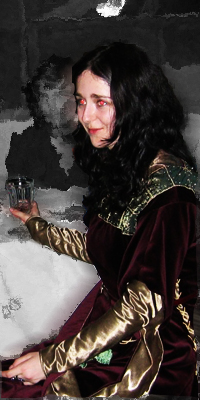
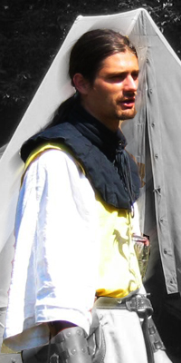
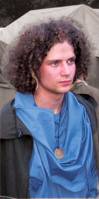
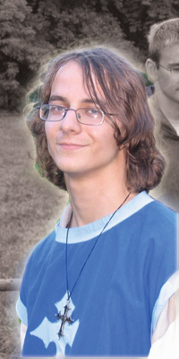
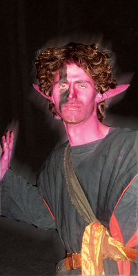
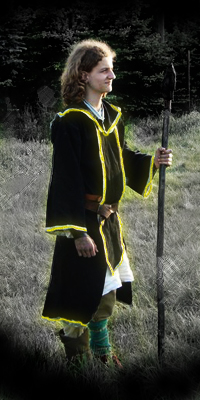
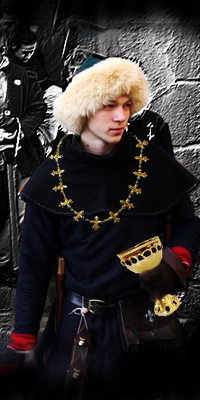
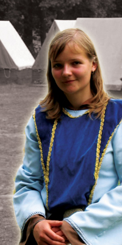

Vıznamné osobnosti
Gorthos
Iriquindae
Miven
Rubáš - veleknìz øádu Iawana a Iewe
baron Elron - velkovévoda z Narkinu
baron Dunar - vévoda z Narkinu
Regent Audon Deranius
Elfin - svìtlonoš
Gavin - drakobijec
Gorthos

Nekromant Gorthos pravdìpodobnì disponuje vìtší magickou mocí i poèetnìjšími hordami ne� Char.
Po Ilbessu se pohybuje ji� nìkolik set let, zemì si na nìj zvykly a on sám se
pravdìpodobnì nesna�í o nesmyslné ovládnutí svìta hrubou silou; radši jím nenápadnì hıbe,
jak se mu zrovna hodí. Naposledy se ukázal v Kel Namhadu krátce pøed zranìním krále Iriquindaeho, nicménì rychle zmizel,
ani� by bylo zøejmé, o co mu vlastnì šlo. Zdá se, �e jeho nemrtvım hordám byla ponechána (èi vštípena?) svobodná vùle,
tak�e se potulují po kraji a škodí i pomáhají; nic není jisté...
Mezi stromy se šeptá o hrùzostrašném souboji, kterı si Gorthos pøipravuje.
Nahoru
Miven
Miven urèila volbou man�ela smìøování celého království (zlí jazykové dodávají –
Bohové, pomozte jí od špatného svìdomí, a to pøes nìkolik známıch princezninıch vırokù
o tom, �e svého mu�e si mù�e narozdíl od svého otce vá�it èi �e král zahanbí na poli cti
mnohé šlechtice). Pøi jistém incidentu zemøela, ale královská rodina existuje pod mocí
Bohù – bylo jí umo�nìno vrátit se v nehmotném tìle, co� jí zajiš�uje všemo�nou bezpeènost,
král se jí naštìstí dotıkat mù�e (romantici tvrdí, �e z lásky, cynici vymıšlí hypotézy o
magii). Miven nedávno porodila dceru, dìdièku trùnu, pojmenovanou na poèest slavné veleknì�ky Elfin.
Spolu s králem se stáhla po narození dcery do ústraní.
Nahoru
Regent Audon Deranius
Zázraènı vzestup døíve opomíjeného talentu pokraèuje. Bıvalı kapitán, bıvalı generál, bıvalı velitel armády, dnešní
do�ivotní regent. Snad zachrání Norgath ve vyhrocené krizi posledních tıdnù.
Nahoru
Iriquindae
Osudem pronásledovanı král pøenechal po narození dcery vládu vìrnému Deraniovi, opustil politiku a �ije
s rodinou "na jakémsi klidném místì".
Nahoru
Rubáš - veleknìz øádu Iawana a Iewe
Rubáš je ponìkud vıstøedním slu�ebníkem Iawen, na knìze zastává dosti netradièní
postoje, co se tıèe alkoholu a �en. Øádu slou�í ji� od nepamìti a aèkoliv šel, lidovì
øeèeno, z prùseru do prùseru, v�dy se nakonec vše v dobré obrátilo. Dnes je ji� další
slavnou osobností z okruhu kolem Gren a spol. Král jej loni jmenoval pøedstavenım Øádu
Boha a Bohynì, namísto hrdinsky padnuvšího Valandila. To vyvolalo celkem zajímavé
komentáøe ze strany mnohıch starších a konzervativnìjších klerikù: "Z bláta do lou�e, po
bezvìrci jsme dostali pijana. Vá�nost našeho øádu nutnì upadá". Rubášovi však zùstal jeho
neochvìjnı optimismus a hrdì prohlašuje, �e povede Øád vstøíc svìtlım zítøkùm.
Nahoru
Gavin - drakobijec
První proslavivší se z øad Gren a spol. V bitvì u Forwistu (toho menšího, u Hvozdu)
zasadil smrtelnou ránu strašlivému nemrtvému drakovi licha Gortha. Sympatizuje s Øádem
jako�to subjektem, kterı ho podporuje pøi jeho nebezpeènıch vıpravách.
Nahoru
baron Elron - velkovévoda z Narkinu
Po vesnicích Norgathu kolují báchorky, �e byl vìznìn Lanasajem v Harnothu a �e prchl s pomocí Šípovıch kumpánù.
Zejména v ji�ních pohranièních oblastech Norgathu panuje zvıšené napìtí a strach z èinností v Západní Mlhavì.
Také se øíká, �e si prı Elron Šípa a jeho špinavce za své peníze koupil, aby pro nìj vynokávali další špínu.
Mnoho vzdìlancù zaèalo pøemıšlet o otázce, co se dìje za stìnami prastaré ghornské pevnosti Narkin?
Posledních nìkolik mìsícù o Elronovi nebylo ani slechu. Mezi obyvateli hraïištì se šušká, �e se Elron bojí pøíchozích
Anakù natolik, �e nechal zmobilizovat celı Narkin a Kult Spravedlnosti. Stejnì tak na tom je i zdemoralizovanı Ghorn.
Armáda Ghornu nyní však nemá jednotné vedení, a tak se vojáci rozdìlili do polovojenskıch jednotek s vlastními zájmy.
Je v tomto nevıhodném postavení ohro�en Norgath a Arlenovo hraïištì?
Arlenovi zpravodajci z pohranièí hlásí formující se vojenské jednotky ghornskıch vojákù v oblasti severovıchodního pahorku
Ahb´Aidad v Západní Mlhavì (severnì od Lapkova).
Nahoru
baron Dunar - vévoda z Narkinu

Døíve chudı obèan Norgathu, dnes ji� bohatı a vlivnı mu�. Zvláštní je, �e do Narkinu vstoupil pøed dvìma roky,
za celou dobu však ani jedinkrát neopustil hrad. Norgathské panstvo polemizuje, proè tento klidnı mu� vlo�il své ambice do
správy Narkinu. Nìkteøí si dokonce myslí, �e byl v Narkinu zamordován. Ostatnì toto lze tì�ko posuzovat, nebo� Narkin je tak peèlivì støe�en,
�e z nìj unikne jen minimum informací.
Nahoru
Elfin - svìtlonoš
Bıvala jednou z nejvìtších osobností Øádu, nejsvìtìjší, vrchol dobra,
nadìje svìtla. Všeobecnì se oèekávalo, �e pøevezme úøad pøedstavené a pozvedne
Øád k novım vıšinám. Osud èi Bohové tomu však nechtìli, Elfin zabili Gorthovi
nemrtví u Forwistu a úøad pøedstaveného pøevzali Valandil a Rubáš, co� vystavilo a
vystavuje Øád nelehkım zkouškám. Naštìstí Bohové ponechali Elfin na svìtì v podobì
Svìtlonoše.
Nahoru